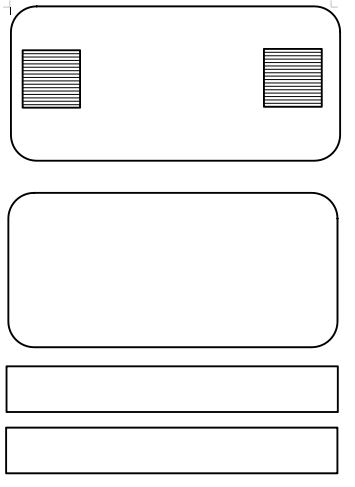

Robótica
Recuperação
Na primeira abordagem podemos construir o controle do carrinho, nesta imagens está o esquema
para recorte do formato controle, com isso precisamos de:
- papelão
- tesoura
- cola quente
- duas tampas de garrafa PET
- Um clips
Segue o esquema abaixo para recorte


PDF com o o esquema em medida escala real
PDF controle